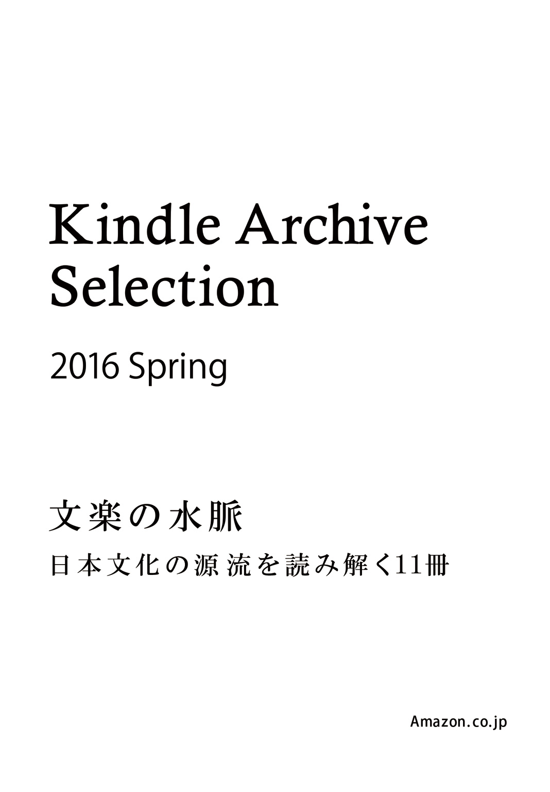
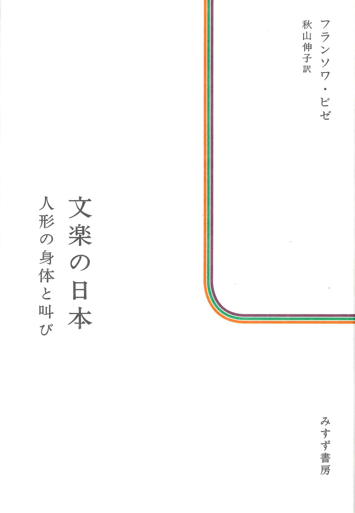
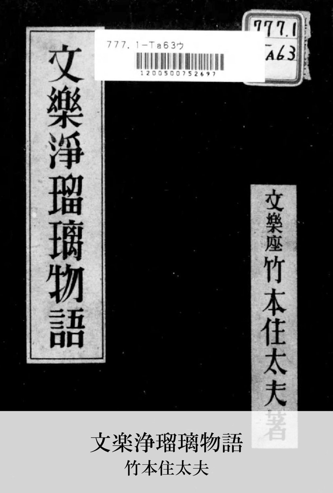
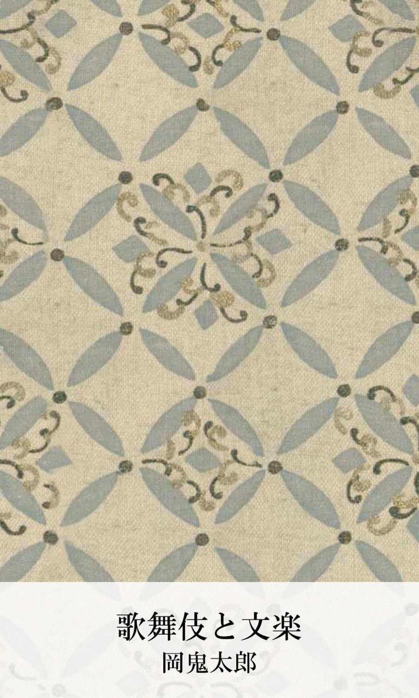
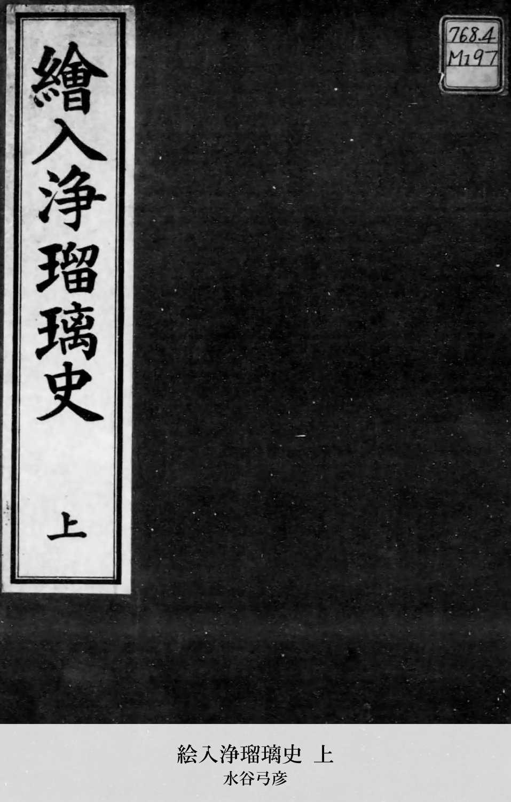
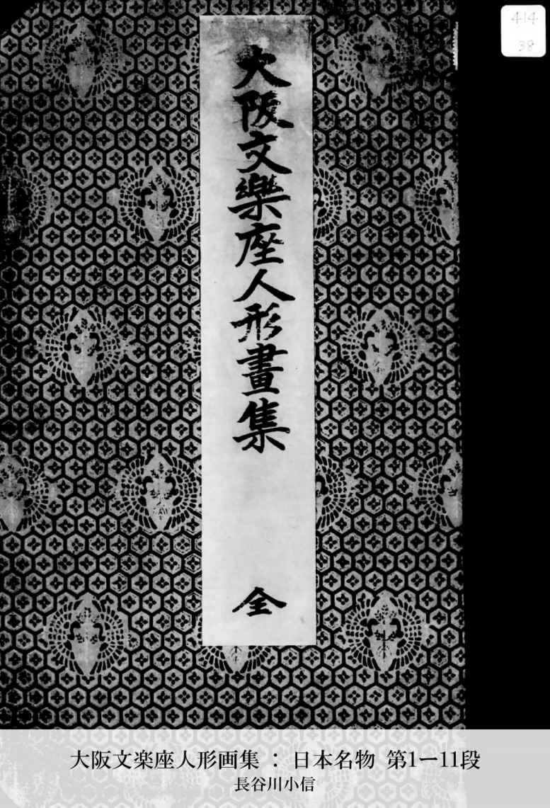
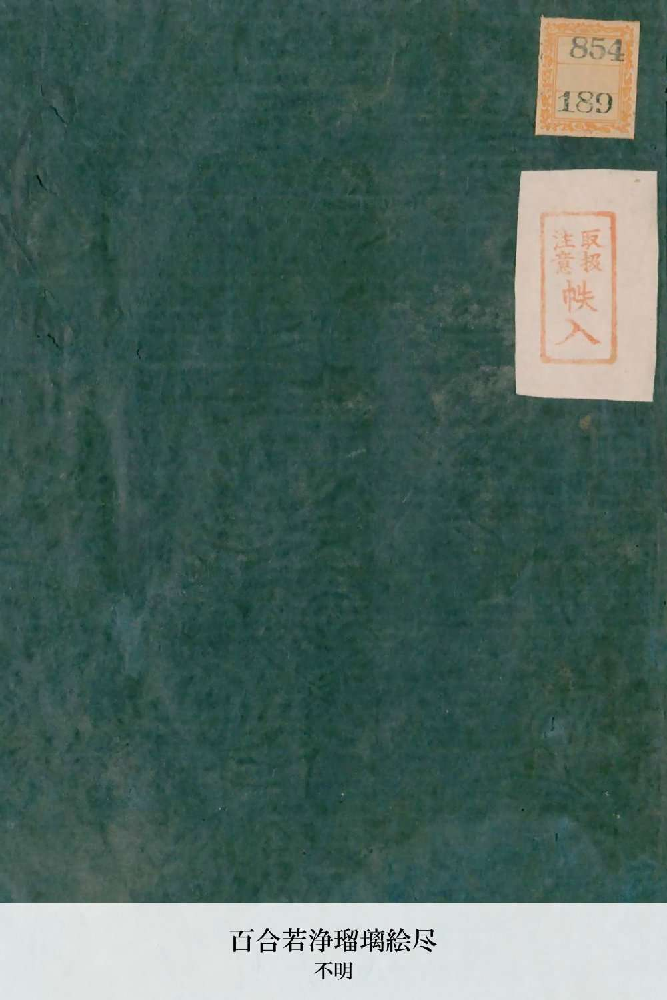
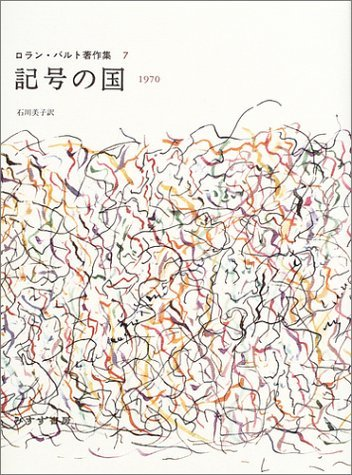
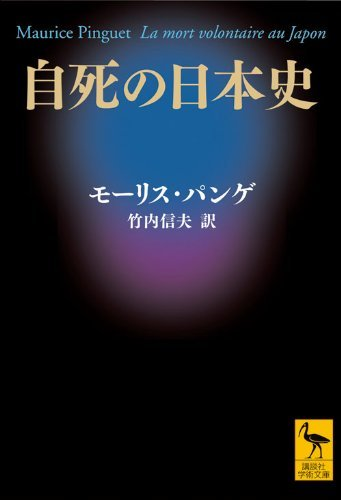
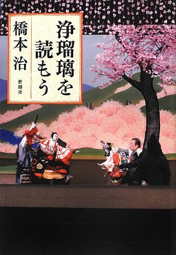

| 文楽の水脈 - 日本文化の源流を読み解く11冊 (KindleArchiveSelection) | |
| Amazon.co.jp | |
| Kindleアーカイブ (2016) | |

・奥付
項目の見方と注意点
・カスタマーレビューの数、平均カスタマーレビューの星の数の選定は、2016年3月時点のものです。
・文庫版、単行本など異なる判型で出版された書籍の場合は、両方のデータを合算して選定しています。
・詳細ページへのURLをクリックすると、その書籍のAmazon.co.jp商品詳細ページへとびます。
※iPhone、iPod Touch、iPad用のKindleアプリからは、このリンクはご利用いただけません。「この操作は現在サポートされていません。」というメッセージが表示され、ご利用いただけません。リンクをコピーしてブラウザよりご覧ください。
選書前記
尾方邦雄（みすず書房編集部・『文楽の日本』担当）
山禄和浩（みすず書房出版部・電子書籍担当）
三浦しをん（直木賞作家）が『あやつられ文楽鑑賞』（双葉文庫）を書き、小林悠（元TBSアナウンサー）がブログ（悠草紙）で鑑賞レポートをつづるなど、女性ファンも増えるなか、文楽の公演入場者数（大阪国立文楽劇場、東京国立劇場小劇場）も、2014年から2015年にかけて最多を更新しているとのこと。このようなブームのなか、この度、自らも竹本越孝（女義太夫）に弟子入りしたフランス人が、西洋演劇との比較から新鮮な見方で文楽を論じた『文楽の日本』刊行にあたり、Kindle Archiveから関連書を選んでご紹介いたします。選書にあたっては、①大正～昭和初期に刊行された文楽の歴史・評論、②ビジュアル本を中心にいたしました。現在、流通している紙書籍・電子書籍の関連書とあわせて、江戸時代から現代までを行き来しながらお楽しみいただけると幸いです。（山禄）

みすず書房
フランソワ・ビゼ (著), 秋山 伸子 (翻訳)
なし
文楽の過去と現在、芸術＝芸能としての根源的な意味から読み解く、フランス人による本格的・独創的な日本文化論。多くの文献を読みこなす研究者的要素と、浄瑠璃に入門した体験と熱心に通う公演での観察によるエッセー的な要素により、惹きこまれる内容になっている。文楽がブームとなっている現在、多くの発見がある快著。

Kindleアーカイブ
竹本住太夫 (著)
なし
「常々、文楽が一般大衆とのつながりに於て、昔時の面影なく、只特別な好事家の趣味としてのみ考へられるやうになつてゆくのは、文楽本来の使命に背いてゐるものといはねばなりません。」（『文楽浄瑠璃物語』 本文引用）義太夫節の太夫、六代目、竹本住大夫（人間国宝）による解説書。浄瑠璃、竹本座、文楽座の歴史から、主要作品の見どころ、自身の伝記まで。

Kindleアーカイブ
岡鬼太郎 (著)
なし
「近頃東京では、人形芝居に人気が出て、これが復活の機運も将に来らんとす、といふやうな噂がある。果して然るかだ。......人形芝居の玩賞は耳から入るが順当で、目から入るのは尋常幼稚な看客気質の出来心なのである。（昭和6年9月）」（『歌舞伎と文楽』 本文引用）明治～昭和初期に活躍した劇評家、『鬼言冗語』で知られる著者による歌舞伎と文楽の時評。

Kindleアーカイブ
水谷弓彦 (著)
なし
「絵入浄瑠璃という語は、従来余り用ひたる人なけれども、此はいふまでもなく、今坊間に行はるゝ五行七行の稽古本の、未だ世に行はれざりし以前、浄瑠璃の正本として版行せられたる......すべて浄瑠璃に挿絵あるものゝ謂なり。」（『絵入浄瑠璃史 上』 本文引用）明治～昭和初期の浄瑠璃研究者、水谷不倒（弓彦）による、江戸時代における絵入り浄瑠璃本の歴史。上・中・下巻あり。

Kindleアーカイブ
長谷川小信 (イラスト)
なし
大阪の浮世絵師、三代目、長谷川貞信による、文楽の人形の画集。『義経千本桜』『仮名手本忠臣蔵』『伊賀越道中双六』『心中天網島』『本朝廿四孝』『菅原伝授手習鑑』などの登場人物を描く。ビゼ「文楽の人形が必ずと言ってよいほどやることがある。ドラマが最高潮に達すると、何層にもなっている衣服を次々と脱ぎ捨てていくのだ。」（『文楽の日本』 本文引用）

Kindleアーカイブ
不明
なし
「然れば汝が弓勢百人の力を合するよし。百合〔あ〕はすると書て百合〔ゆり〕と訓ず。今日より氏を百合若と改め。仮に大臣の位に準へ。」（近松門左衛門作「百合若大臣野守鏡」『新古典文学大系91』岩波書店 本文引用）文楽や歌舞伎の演目の一つ、「百合若大臣」の江戸時代に発行された芝居絵本（芝居が上演される際に出版された小冊子）。

みすず書房
ロラン・バルト (著), 石川 美子 (翻訳)
なし
「文楽において声が外面化するもの、それは結局、声によって伝えられるもの（たとえば「種々の感情」）ではなく、声そのものであり、声が身を投げ出すのだ。」（『記号の国』 本文引用）文楽についての三つの断章「三つのエクリチュール」「生命あるもの／生命なきもの」「内部／外部」も含む、1966年～1968年に三度の滞在から生まれたバルトの日本論。

講談社
モーリス・パンゲ (著), 竹内 信夫 (翻訳)
(8)
パンゲ「近松と共同執筆者たちは、舞台芸術が着想を与えたように思われる場面を舞台上に復元したまでのことだ。」（『自死の日本史』 本文引用）ビゼ「「残酷演劇」を「自決」と結び付ける絆、実り豊かなものと言ってもよいこの絆をパンゲは強調するが、私も同感である。」（『文楽の日本』 本文引用）近松と西鶴の描く心中を論じた「愛と死」ほか、『古事記』から三島まで自死の文化論。
岩波書店
加藤周一(著)
(16)
ビゼ「太夫はむしろテクストに厚みを与え、しかも、そこにない場面の様々な情景や喧騒を声の出し方だけで、現前させてみせたのである。......加藤周一の言葉を借りるなら、浄瑠璃は、「聞きどころ」に満ちており、耳をそばだてるよう要求するのだ。」（『文楽の日本』 本文引用）文学・絵画などから、日本文化を貫く時間と空間に対する独特な感覚に迫る。
KADOKAWA / 角川学芸出版
谷崎 潤一郎 (著)
 (3)
(3)
「大坂の通人に聞いた話に、文楽の人形浄瑠璃では明治になってからも久しくランプを使っていたものだが、その時分の方が今より遥かに余情に富んでいたという。......その頃の舞台の凄いような美しさを空想して、そぞろに寒気を催すのである。」（角川ソフィア文庫 本文引用）陰翳によって生かされる美しさこそ「日本の美」であると説く、文化を問い直す随筆。

新潮社
橋本治 (著)
(6)
「私は、人形浄瑠璃のドラマが日本人のメンタリティの原型を作ったのではないかと思っているのだが......」（『浄瑠璃を読もう』 本文引用）『文楽の日本』でも論じられている『仮名手本忠臣蔵』『義経千本桜』『菅原伝授手習鑑』『ひらかな盛衰記』『妹背山婦女庭訓』など、最高の案内人が「江戸時代的思考」で主要作品を精読する。膝を打つ読み解きが満載の書。